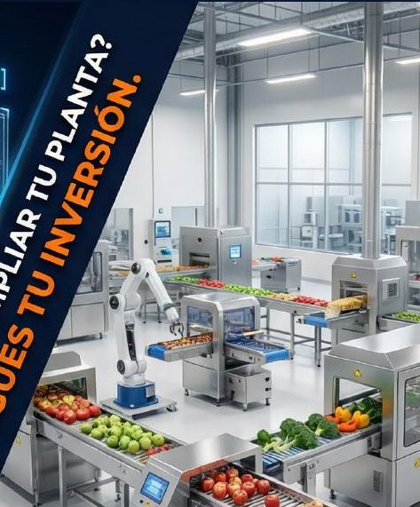

Inicio / Guías / Habilitación sanitaria de planta
Guía técnicaHabilitación sanitaria de planta: qué pide hoy DIGESA
La habilitación de fábrica ya no es el trámite vigente. Te explicamos qué la reemplazó y qué revisa la autoridad en tu planta, artículo por artículo del DS 007-98-SA.

La habilitación quedó atrás; la inspección no
Durante años se habló de la «habilitación sanitaria de fábrica», que el DS 007-98-SA describía en sus artículos 94 al 99. Ese ya no es el trámite que se pide hoy ante DIGESA.
Si lo que buscas es el registro de un producto, esa es otra guía: registro sanitario DIGESA de alimentos.
Lo vigente es obtener, según el tipo de establecimiento y de producto, la Validación Técnica Oficial del Plan HACCP o el Certificado de Principios Generales de Higiene (PGH). Además, la autoridad realiza inspecciones y vigilancias sanitarias inopinadas, es decir, sin aviso previo.
En todos los casos se mira lo mismo: que la planta cumpla las condiciones del Título IV del DS 007-98-SA —estructura, iluminación, ventilación, agua, flujo de proceso e higiene— y que los programas y registros estén al día. Casi todo eso se decide al construir; por eso conviene revisarlo en el plano.
Los tres momentos en que revisan tu planta
- Validación Técnica Oficial del Plan HACCP: DIGESA verifica en planta que tu Plan HACCP se aplica de verdad en el proceso.
- Certificado de Principios Generales de Higiene (PGH): acredita que el establecimiento cumple los Principios Generales de Higiene del Codex Alimentarius.
- Inspección o vigilancia sanitaria inopinada: una visita sin aviso para comprobar las condiciones de higiene, los programas y los registros.
Vigencia del certificado HACCP. Según el Comunicado 11-2026 de DIGESA (30 de octubre de 2026), los certificados de Validación Técnica Oficial del Plan HACCP que se otorguen desde el 19 de octubre de 2026 tienen una vigencia de 2 años. Los que estaban vigentes al 11 de junio de 2026 mantienen vigencia indeterminada mientras dure el proceso judicial que DIGESA menciona en ese comunicado. El comunicado no se refiere al certificado PGH. Esto puede cambiar: confirma siempre en los comunicados vigentes de DIGESA.
Cuál te corresponde depende de tu establecimiento y de tu producto. El costo y el plazo de cada trámite están en el TUPA vigente de la autoridad que corresponda. Si tu producto es de procesamiento primario agropecuario, la autoridad es SENASA, con sus propios procedimientos.
Requisitos artículo por artículo
Es la lista que conviene tener al lado del plano. Cada punto indica el artículo del reglamento del que sale.
Ubicación
A no menos de 150 m de actividades que generen insectos, polvo, humos, vapores u olores. Nunca sobre rellenos sanitarios, basurales, cementerios, pantanos o terrenos inundables.
Local exclusivo y accesos
Sin conexión directa con viviendas ni con locales de otras actividades. Vías de acceso y patios interiores pavimentados.
Pisos y paredes
Materiales impermeables y resistentes a roedores. Uniones pared-piso a media caña, pisos con declive hacia canaletas o sumideros y paredes lisas con pintura lavable de color claro.
Techos y ventanas
Techos fáciles de limpiar que reduzcan la condensación y los mohos. Ventanas y aberturas que no acumulen suciedad y con protección contra insectos y otros animales.
Iluminación
Natural, complementada con artificial cuando haga falta, sin sombras ni encandilamiento. Mínimos: 540 lux en examen de producto, 220 en producción y 110 en otras zonas.
Ventilación
Suficiente para evitar calor excesivo y condensación. El aire nunca debe ir de una zona sucia a una limpia, y las rejillas deben ser anticorrosivas y desmontables.
Distribución y flujo
Ambientes ordenados para evitar la contaminación cruzada, con avance en etapas separadas desde el área sucia hacia la limpia. Personal y equipos del área sucia no circulan por la limpia.
Agua y residuos
Agua apta para consumo humano, de red pública o pozo, con almacenamiento protegido y abastecimiento permanente. Residuos sólidos en recipientes cubiertos.
Frío
Cámaras de enfriamiento si elaboras productos de fácil descomposición, con dispositivos visibles para medir y registrar la temperatura.
Equipos auxiliares
Instalaciones o equipos complementarios que puedan contaminar el producto deben estar en ambientes separados de las áreas de producción.
Vestuarios y servicios higiénicos
Espacio para cambiarse donde la ropa de trabajo y la de calle no se toquen. Servicios higiénicos según el número de trabajadores (ver tabla).
Control de plagas
Tapas metálicas en cajas y buzones de desagüe, rejillas metálicas y trampas de agua en las canaletas, y medidas que impidan el ingreso de animales.
Las dos tablas que más se consultan
Iluminación mínima (Art. 34)
| Zona | Mínimo |
|---|---|
| Examen detallado del producto | 540 lux |
| Salas de producción | 220 lux |
| Otras zonas | 110 lux |
Servicios higiénicos del personal (Art. 54)
| Personas | Inodoros | Lavatorios | Duchas | Urinarios |
|---|---|---|---|---|
| 1 a 9 | 1 | 2 | 1 | 1 |
| 10 a 24 | 2 | 4 | 2 | 1 |
| 25 a 49 | 3 | 5 | 3 | 2 |
| 50 a 100 | 5 | 10 | 6 | 4 |
| Más de 100 | 1 aparato adicional por cada 30 personas | |||
Los inodoros, lavatorios y urinarios deben ser de loza.
Errores de diseño que luego hay que demoler
Baños junto a producción
Servicios higiénicos que abren directo a la sala de proceso, cuando el reglamento pide evitar esa proximidad (Art. 36).
Flujos que se cruzan
Materia prima, producto terminado, personal y residuos que comparten pasillos, en vez de avanzar de lo sucio a lo limpio (Art. 44).
Pisos sin declive
Pisos planos o sin canaletas donde el agua de lavado se queda estancada (Art. 33).
Sin vestuarios
El personal se cambia donde puede y la ropa de calle termina junto a la de trabajo (Art. 53).
Aire en sentido contrario
Ventilación que lleva aire de la zona de recepción o residuos hacia la de envasado (Art. 35).
Equipos auxiliares dentro
Compresoras, calderos u otros equipos complementarios instalados en la sala de producción (Art. 46).
Tu planta lista para la inspección antes de construir
Llevamos cada requisito de esta guía a un modelo de tu planta para encontrar los problemas cuando todavía están en el plano.
Modelo 3D con los requisitos
Ubicación de ambientes, materiales, iluminación, drenajes y circulaciones revisados sobre el modelo, no en obra.
Simulación con FlexSim
Simulamos la operación para ver dónde se cruzan los flujos y qué equipo limita la capacidad antes de invertir.
Plan HACCP y PGH
Plan HACCP, programas de prerrequisitos y memoria descriptiva del proceso para la validación o el certificado que te corresponda.
Y como la inspección puede llegar sin aviso, los registros tienen que estar al día todos los días, no solo antes de un trámite. Por eso también digitalizamos los registros BPM y HACCP, para que estén completos y a la mano cuando llegue el inspector.
Lo que más nos preguntan
¿Todavía existe la habilitación sanitaria de fábrica?
Ante DIGESA, ya no es el trámite vigente. Hoy, según el tipo de establecimiento y de producto, se obtiene la Validación Técnica Oficial del Plan HACCP o el Certificado de Principios Generales de Higiene (PGH), y la planta puede recibir inspecciones sanitarias inopinadas.
¿Qué es una inspección sanitaria inopinada?
Es una visita de la autoridad sanitaria sin aviso previo para verificar las condiciones higiénico-sanitarias del establecimiento, la aplicación de sus programas (BPM, higiene y saneamiento, Plan HACCP) y sus registros. Por eso la planta y los registros deben estar listos todos los días, no solo antes de un trámite.
¿Validación HACCP o PGH: cuál necesito?
Depende del tipo de establecimiento y del producto que elaboras. En el diagnóstico inicial revisamos tu caso, te decimos cuál corresponde y qué te falta para obtenerlo.
¿Puedo adecuar un local que ya está construido?
Sí. El DS 007-98-SA (Art. 33) establece que el reacondicionamiento de locales ya construidos se sujeta a los mismos requisitos de estructura y acabados. Modelar el local en 3D antes de la obra permite decidir qué cambiar sin picar paredes de más.
¿Cuánta iluminación necesita una sala de producción?
El DS 007-98-SA (Art. 34) fija como mínimo 220 lux en las salas de producción, 540 lux donde se hace un examen detallado del producto y 110 lux en otras zonas, evitando sombras, reflejos o encandilamiento.
¿Cuántos servicios higiénicos necesita mi planta?
Según el DS 007-98-SA (Art. 54), de 1 a 9 personas se requiere 1 inodoro, 2 lavatorios, 1 ducha y 1 urinario; de 10 a 24 personas, 2 inodoros, 4 lavatorios, 2 duchas y 1 urinario; de 25 a 49 personas, 3 inodoros, 5 lavatorios, 3 duchas y 2 urinarios; de 50 a 100 personas, 5 inodoros, 10 lavatorios, 6 duchas y 4 urinarios; y por encima de 100 personas, 1 aparato sanitario adicional por cada 30 personas.
¿A qué distancia de otras actividades debe estar la planta?
El DS 007-98-SA (Art. 30) indica que la fábrica no debe instalarse a menos de 150 metros de establecimientos o actividades que generen insectos, polvo, humos, vapores, malos olores u otra contaminación. Tampoco puede construirse sobre rellenos sanitarios, basurales, cementerios, pantanos o terrenos expuestos a inundaciones.
Fuentes: DS 007-98-SA, Reglamento sobre Vigilancia y Control Sanitario de Alimentos y Bebidas (Título IV), y Norma Sanitaria para la Aplicación del Sistema HACCP en la Fabricación de Alimentos y Bebidas (RM 449-2006/MINSA). Las normas han tenido modificaciones posteriores: verifica siempre el texto vigente y el TUPA de la autoridad que corresponda. Autor: Ing. Willam Pari Hilasaca, CIP N.° 149723 · Actualizado: noviembre de 2026.
¿Vas a construir, adecuar o certificar tu planta?
Revisamos tu plano frente a estos requisitos y te preparamos para la validación HACCP, el PGH o una inspección sin aviso. El diagnóstico inicial no tiene costo.
Agenda tu diagnóstico gratuito →